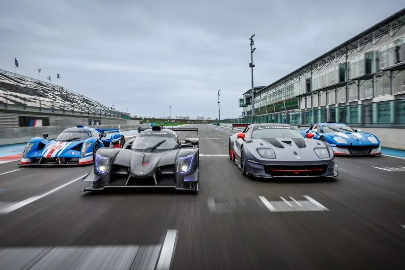
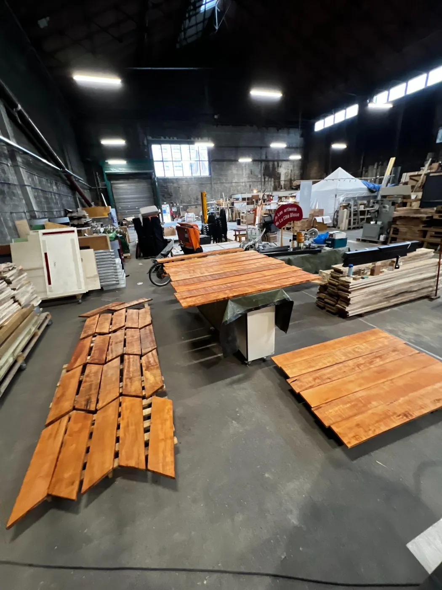
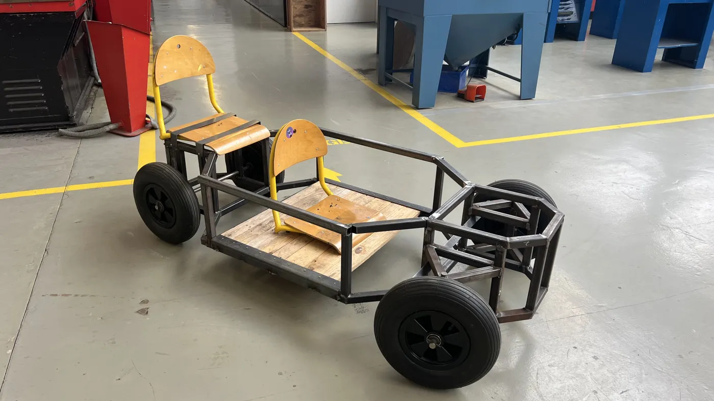
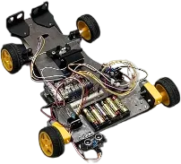
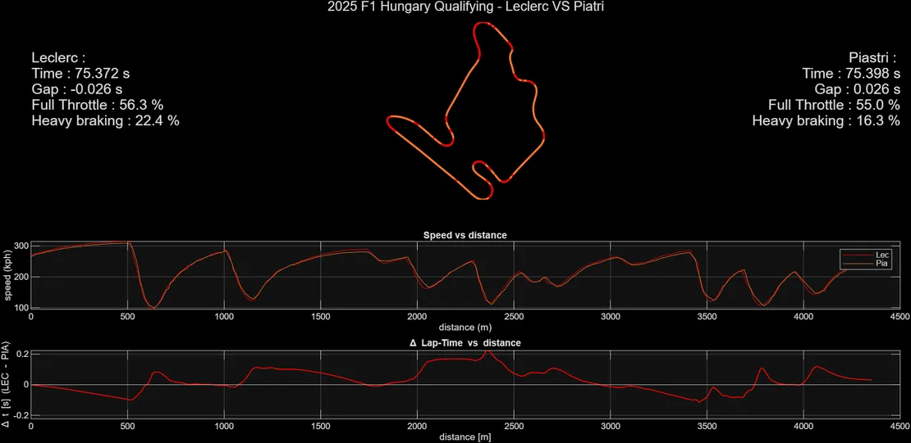
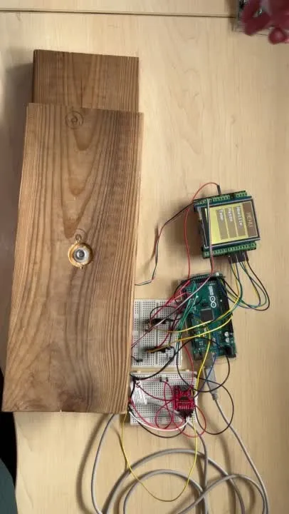

Analyse de données
Importer des données, structurer des signaux et construire des indicateurs de performance. J'ai développé sous MATLAB un outil qui synchronise des courbes avec une carte du parcours.
MATLAB · Excel · KPIEn 3e année du Bachelor de Technologie Arts et Métiers à Bordeaux-Talence, je cherche une alternance en cycle ingénieur en conception mécanique dès septembre 2027. CATIA V5, 3DEXPERIENCE, MATLAB ; 16 semaines en entreprise, dont 12 chez Ligier Automotive. Mobile partout en France.
Glissez pour faire tourner · cliquez sur un objet
Profil
Je m'appelle Peyo Dupouey. En troisième année de Bachelor de Technologie aux Arts et Métiers, je relie la conception mécanique, l'analyse de données et le prototypage pour faire fonctionner des systèmes réels, du modèle 3D jusqu'à l'essai.
Importer des données, structurer des signaux et construire des indicateurs de performance. J'ai développé sous MATLAB un outil qui synchronise des courbes avec une carte du parcours.
MATLAB · Excel · KPIModéliser des pièces, les mettre en plan, puis assembler et tester des prototypes intégrant électronique et capteurs. Chez Ligier, j'ai conçu un outillage passé par trois versions.
CATIA V5 · 3DEXPERIENCE · Fusion 360 · ArduinoVice-président du bureau des élèves : planification d'événements, gestion d'un budget, répartition des rôles. J'ai organisé une course d'orientation pour plus de 50 étudiants sur 10 postes.
Gestion de projet · CoordinationMatrice de compétences
| Compétence | Mise en pratique | Projets associés | Résultat |
|---|---|---|---|
| CAO : CATIA V5, Fusion 360 | En entreprise et en projet | Ligier, Garage Moderne, robot, caisse à savon | Outillage de contrôle mené de la V1 à la V3, utilisé aux 24 Heures du Mans |
| PLM : 3DEXPERIENCE | En entreprise | Ligier Automotive | Plus de 17 000 fichiers et 7 véhicules complets migrés depuis CATIA V5 |
| Dimensionnement et RDM | En entreprise et en projet | Barres de torsion Ligier, direction de caisse à savon | Outil Excel de dimensionnement de barres de torsion |
| Analyse de données : MATLAB | En projet personnel | Outil de télémétrie | Publication partagée par le responsable de la dynamique véhicule de McLaren Racing |
| Fabrication : tournage, fraisage, soudure, bois | En atelier | Garage Moderne, caisse à savon | 10 ouvrages en bois en un mois ; une direction fonctionnelle |
| Électronique embarquée : Arduino, capteurs | En projet | Robot suiveur de ligne, ruche connectée | Robot engagé à la Toulouse Robot Race |
| Intégration web et IoT : HTML, XML, Ethernet | En projet | Ruche connectée | Page actualisée en temps réel par un serveur Arduino |
| Gestion de projet : Gantt, COPIL, budget | En projet et en association | Caisse à savon, Garage Moderne, bureau des élèves | 1 800 € dépensés sur 15 000 € ; course d'orientation pour plus de 50 étudiants |
Méthode
Expériences et projets
Deux stages et quatre projets : l'essentiel en cartes, puis le détail étape par étape. La fiche mission complète est à un clic.

Stage technicien · 2026

Stage exécutant · 2025

Projet d'école · 2025-2026

Projet d'équipe · 2024-2025

Projet personnel · 2025

Projet d'équipe · IoT
Le détail, étape par étape
Stage technicien · 2026
Douze semaines au bureau d'études d'un constructeur de véhicules de compétition : migration de données CAO, conception d'un outillage de contrôle et dimensionnement de pièces de suspension.
La gamme Ligier sur le circuit de Magny-Cours
Ligier Automotive conçoit et fabrique des véhicules de compétition et des concept cars, et assure le support technique de ses clients. Le bureau d'études est à Magny-Cours, la fabrication à Amilly.
Basculer les modèles 3D de CATIA V5, hébergés sur un serveur physique, vers la plateforme 3DEXPERIENCE. Puis reconstruire chaque véhicule complet à partir de ses sous-ensembles.
Avant chaque course, un contrôle technique vérifie l'écartement des sabots et la hauteur du diffuseur. L'outillage existant ne permettait de vérifier que la cote nominale.
La V1 ne montrait pas la plage de tolérance, et son système d'accroche bloquait contre les mâts d'aileron : il fallait le démonter pour poser ou retirer l'outil.
Nouveaux points d'ancrage sur des inserts de la boîte de vitesses, entretoises séparées, point d'accroche supplémentaire. Les équerres matérialisent la zone légale : une surface à 50 mm et des encoches à −5 mm.
Les essais ont montré trop de jeu dû au nombre de liaisons. J'ai dessiné une pièce monobloc en col de cygne, puis prolongé les équerres pour répondre aux retours des équipes et de l'organisateur.
Un outil Excel qui calcule, pour une raideur de roue donnée, le couple appliqué, la raideur cible de la barre, ses diamètres, sa contrainte de cisaillement et sa masse.
Tableau de valorisation d'expériences
Recommandations
Il fait preuve de fiabilité, d'esprit d'initiative et d'un réel désir de contribuer positivement autour de lui.
Il joue un rôle moteur dans les travaux d'équipe, grâce à son énergie, sa volonté d'approfondissement et sa bienveillance.
Test de compatibilité
Collez la fiche de poste ou déposez-la, puis demandez à l'IA de votre choix si mon profil correspond. Le prompt est déjà rédigé : il contient mon parcours et le poste.
Chaque bouton ouvre l'assistant avec un prompt prêt à envoyer. Le prompt est aussi copié : collez-le si la zone de saisie est vide.
Tu es un recruteur expérimenté en ingénierie. Évalue objectivement si ce candidat correspond au poste. Donne : 1) une note sur 10, 2) les correspondances, chacune avec une preuve tirée du profil, 3) les écarts et les questions à poser en entretien, 4) une conclusion en une phrase. N'invente rien sur le candidat. CANDIDAT — Peyo Dupouey (portfolio : https://claude.ai/artifact/WrAjNyXzJZPBtQfeJVKiJL) Étudiant en 3e année de Bachelor de Technologie (Arts et Métiers, Bordeaux-Talence, grade licence, mécanique-production), major de promotion en 1re année. Parcours : 1re année de BUT Informatique, puis réorientation vers l'industrie. Logiciels : CATIA V5, 3DEXPERIENCE, Fusion 360, MATLAB, Excel, Arduino. - Stage technicien, bureau d'études de Ligier Automotive (constructeur de véhicules de compétition), avril-juillet 2026 : migration de plus de 17 000 fichiers CAO et de 7 véhicules complets de CATIA V5 vers 3DEXPERIENCE, avec un guide des erreurs ; conception sur CATIA V5 d'un outillage de contrôle réglementaire (cotes 1100 mm +0/-100 et 200 mm max) de la V1 à la V3, mises en plan, fabrication et essais, utilisé par les équipes aux 24 Heures du Mans ; outil Excel de dimensionnement de barres de torsion (couple, raideur, diamètres, cisaillement, masse). - Stage exécutant, Le Garage Moderne (association, Bordeaux), février 2025 : 7 tables en bois de récupération et 3 abris pour frigos solidaires conçus sur CATIA V5 et fabriqués en binôme (mi-bois, toit à 10°), 1 800 € dépensés sur un budget de 15 000 €. - Robot suiveur de ligne en équipe de 3 (Toulouse Robot Race) : CAO, impression 3D, capteurs, programmation Arduino, tests itératifs, participation à la compétition. - Outil d'analyse de télémétrie sous MATLAB, en autonomie : recalage de tours sur la distance, KPI, graphiques comparatifs ; publication partagée par le responsable dynamique véhicule de McLaren Racing. - Caisse à savon biplace en équipe de 4 (2025-2026), objectif individuel : la direction complète. Cahier des charges, Gantt, conception CATIA V5, fabrication en tournage, fraisage, pliage, jet d'eau et soudure, essais ; 4 h par semaine. - Ruche connectée en équipe de 5 (Arduino Mega). Ma partie : intégration web, serveur Arduino avec shield Ethernet, données en XML, page actualisée en temps réel. Reste de l'équipe : comptage des abeilles par fourches optiques, pesée du miel par capteur de force étalonné, écran tactile, GPS, serveur web (Ethernet, XML), alerte SMS (GSM, accéléromètre). - Mini soufflerie (Arduino, maquettes 1:43). - Vice-président du bureau des élèves : course d'orientation à l'échelle d'une ville pour plus de 50 étudiants. Commissaire de piste FFSA, chauffeur VIP pour Ferrari aux 24 Heures du Mans, voyage seul en Norvège (ferme isolée), marathon de Séville 2026. Recommandations : « fiabilité, esprit d'initiative » (Florent Gouin, Workflo Engineering) ; « rôle moteur dans les travaux d'équipe » (Carine Vignes, professeure agrégée). POSTE Je te colle la fiche de poste dans mon prochain message.
Questions de recruteurs
Une alternance en cycle ingénieur, en conception mécanique, bureau d'études ou R&D, à partir de septembre 2027. Il est mobile dans toute la France.
Il est en 3e année du Bachelor de Technologie des Arts et Métiers, campus de Bordeaux-Talence : diplôme accrédité par la CTI, grade licence, spécialité mécanique-production. Il a été major de promotion en 1re année, après une 1re année de BUT Informatique.
16 semaines : 12 au bureau d'études de Ligier Automotive en 2026 (migration vers 3DEXPERIENCE, outillage de contrôle réglementaire, dimensionnement de barres de torsion) et 4 au Garage Moderne en 2025 (conception et fabrication de mobilier et d'abris).
CATIA V5 et 3DEXPERIENCE en entreprise, Fusion 360, MATLAB, Excel et Arduino en projet.
Un outillage de contrôle utilisé aux 24 Heures du Mans, un outil d'analyse de télémétrie sous MATLAB partagé par McLaren Racing, la direction d'une caisse à savon, un robot suiveur de ligne et le site web temps réel d'une ruche connectée.
Oui. Ce portfolio est bilingue, et il a travaillé plusieurs semaines en anglais dans une ferme en Norvège.
Florent Gouin (Workflo Engineering) et Carine Vignes, professeure agrégée. Leurs lettres complètes sont disponibles sur demande.
Par e-mail à peyo.dupouey@ensam.eu, par téléphone au +33 7 68 15 74 06, ou sur LinkedIn.
Formation
Diplôme accrédité par la CTI, conférant le grade de licence, spécialité mécanique-production. Une pédagogie par projet, de la conception à la réalisation d'objets technologiques.
Contact